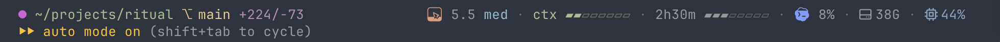

A real status line from a working session, part by part. Point at any part of the strip, or at a row in the key below, to see what it measures and when it changes colour.
git clone https://github.com/Tigeneric/plimsoll.git && plimsoll/install.sh

Narrow screen? The strip scrolls sideways.
The model and Codex marks are glyphs of a small font built on your machine and placed at private-use code points U+E900–U+E9A9. Each mark exists at 26 fill levels; the status line picks the one for what is left of the weekly limit, so the tile drains from the top as the week is spent.
Where the terminal cannot draw that font, the line prints the names instead (Opus 5.5 med, Codex 8%), and the weekly levels are not shown.
Claude Code tells each session its limits only with the answer to that session's own last request, so a tab left alone for an hour would show an hour-old reading. Every session therefore merges what it knows, Claude's windows and Codex's, into one file, ~/.cache/plimsoll/limits.json, and draws from the merge: per window, a later reset means a newer window, and within one window the higher share wins, since usage only grows.
plimsoll never calls the network or a CLI to refresh it. Another program may: one that asks the official CLIs while every tab is idle keeps the file fresh, and can add Antigravity's limits, which the line keeps but does not draw. The format and the merge rule are in the README.